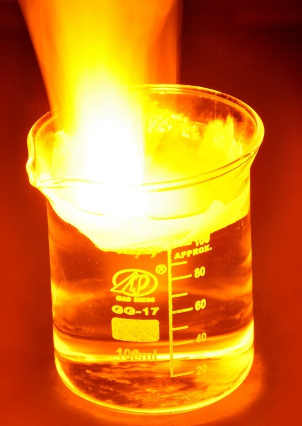
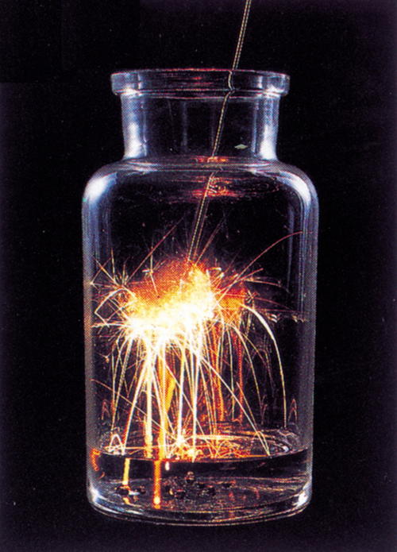

Properties of Sodium


Sodium burn in water
Sodium burn in air
Practice makes pertect!
Introduction
This page you will learn a lot of things about the properties of sodium. We all know that element have a lot of properties and they have their own chemical properties and physical properties. So, we will introduce in these two parts and let you know how amazing the sodium is!
Physical Properties
- Its color is silver-shite and it metal sodium can shaped or bent because it is very soft.
- The melting point of sodium is 97.8 degrees.
- It is a good conductor of heat and electricity.
- It also has good Extensibility and low hardness.
Chemical Properties
- It can dissolve in the water very easily.
- Sodium burns in the air to produce pale yellow sodium peroxide.
- Sodium reacts very fast with water, and also with snow and ice and it will produce sodium hydroxide and hydrogen.